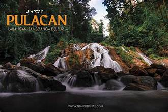
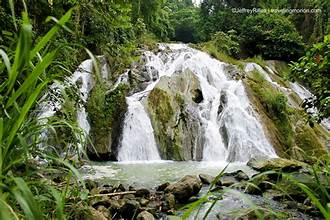
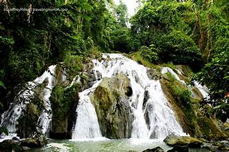
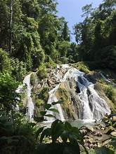
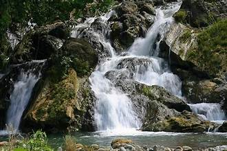
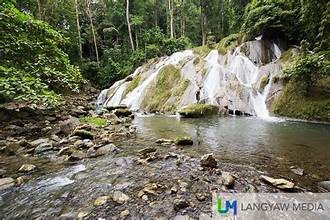

Pulacan Falls is one of the most celebrated natural attractions in Zamboanga del Sur, located in the municipality of Midsalip. The falls cascade in multiple tiers through a lush forest environment, creating a stunning natural spectacle.
The waterfall drops dramatically over rocky cliffs into a clear natural pool below. Surrounding the falls is a dense tropical forest filled with the sounds of birds and flowing water. The area retains a wild, unspoiled character that makes it a favorite among nature lovers and adventure seekers.
Reaching Pulacan Falls requires traveling to Midsalip municipality and then taking a trek through forested trails. The hike typically takes about one to two hours depending on the route and the visitor's fitness level. Local guides are available to assist visitors.
Visitors can swim in the natural pool at the base of the falls, take photographs of the scenic cascades, and enjoy picnicking in the surrounding forest. The trek itself is an attraction, passing through rural landscapes and offering views of the Zamboanga highlands.
The area around Pulacan Falls falls within a protected watershed zone. Local government and community organizations maintain basic facilities and encourage responsible tourism practices to preserve the natural environment.
It is advisable to visit during or shortly after the rainy season when the falls are at their most powerful. Visitors should wear appropriate footwear for the trail, bring water and snacks, and avoid leaving waste in the area.


